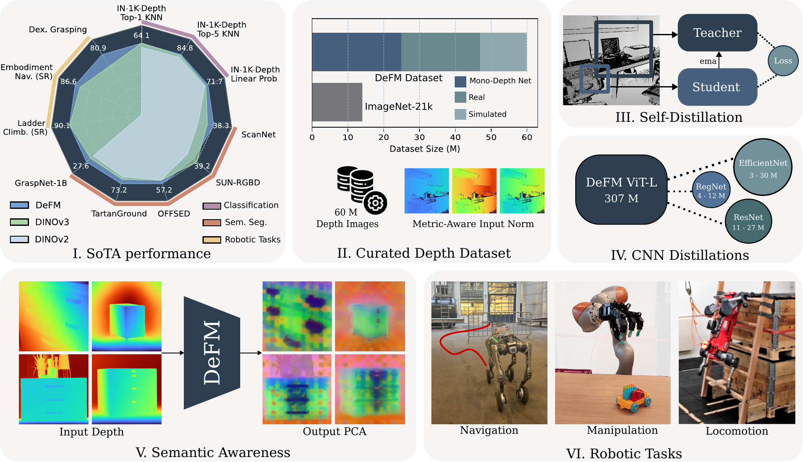

tl;dr A DINO-style encoder, but for depth images. One frozen backbone that works across navigation, manipulation and locomotion — released as 12 ready-to-use models from 3M to 304M parameters.
Abstract
Depth sensors are widely deployed across robotic platforms, and advances in fast, high-fidelity depth simulation have enabled robotic policies trained on depth observations to achieve robust sim-to-real transfer for a wide range of tasks. Despite this, representation learning for depth modality remains underexplored compared to RGB, where large-scale foundation models now define the state of the art. To address this gap, we present DeFM, a self-supervised foundation model trained entirely on depth images for robotic applications. Using a DINO-style self-distillation objective on a curated dataset of 60M depth images, DeFM learns geometric and semantic representations that generalize to diverse environments, tasks, and sensors. To retain metric awareness across multiple scales, we introduce a novel input normalization strategy. We further distill DeFM into compact models suitable for resource-constrained robotic systems. When evaluated on depth-based classification, segmentation, navigation, locomotion, and manipulation, DeFM achieves state-of-the-art performance across several benchmarks and demonstrates strong generalization from simulation to real-world environments. We release all our pretrained models, which can be adopted off-the-shelf for depth-based robot learning.
Explore DeFM features
DeFM-L/14 patch features on real sensor depth (robot cameras, ScanNet, GraspNet-1B, Middlebury) and on depth estimated from photos with Depth Anything V2. Hover over an image to see which patches DeFM considers similar to the one under the cursor.
Features are averaged over half-patch shifts and a horizontal flip (7-px grid) and upsampled smoothly; similarity uses a rank-64 projection of the 1024-d patch features (cosine). The background of some samples is removed by thresholding the first principal component. Image credits: Middlebury 2014 (Scharstein et al.), ScanNet (Dai et al.), GraspNet-1Billion (Fang et al.), ImageNet (Deng et al.).

Depth foundation model for robotics
Self-supervised on 60M curated depth images; features generalize across environments, tasks and sensors.
Metric-aware input normalization
A 3-channel log-compressed representation that keeps metric scale from millimeters (grasping) to 100 m (navigation).
Frozen, no task-specific tuning
The same frozen encoder is used for classification, segmentation, navigation, manipulation and locomotion.
Compact distilled models
ViT-S, ResNet, RegNet and EfficientNet students down to 3M parameters, timed on an RTX 4090 and a Jetson AGX Orin.
Method

Self-distillation on depth
DeFM uses a DINOv2-style objective with global and local crops. The student sees masked global crops and local crops and learns to match the momentum teacher through DINO losses and iBOT patch-level supervision. We train a ViT-L/14 (304M) from scratch on depth.

Metric-aware normalization
Log normalization captures the overall depth range while preserving fine near-field structure; plain metric normalization gives weak contrast. Stacking a global log-scaled, a mid-range and a far-range channel keeps metric depth while staying robust across domains.

Compact CNN students
A BiFPN on top of the CNN backbone produces dense features supervised by the teacher's patch tokens, while the teacher's class token supervises the pooled feature. This yields ResNet, RegNet and EfficientNet encoders ready for RL at large batch sizes.
60.4M depth images from 18 datasets
Emergent semantic understanding
Despite lacking color and texture, DeFM features cluster by object part. We map the first three PCA components of the patch features to RGB.


Benchmarks
Frozen encoders with linear probes. RGB foundation models receive min-max normalized depth stacked into three channels. Hover a bar for details.

Robotic tasks
Three RL tasks with the encoder frozen unless stated otherwise. Baselines: ImageNet-pretrained, a VAE pretrained on the DeFM dataset, and DINOv3-L distilled into the same architecture.
Embodiment-aware long-range navigation Unitree B2W · RegNetX-400MF + FPN
Real-world deployments indoors, in an urban area, a park and a construction site, handling pedestrians, scooters, barriers, furniture and uneven terrain.
Success rate (%) in the training environment and three unseen TartanGround environments
DeFM has the highest success rate in all four environments and the fewest collisions. It needs no task-specific depth clipping, noise model or other hand-engineering, unlike the VAE.
Dexterous grasping KUKA + Allegro hand · ResNet-18
Success rate normalized to the teacher policy (%), 2,000 episodes

Quadrupedal ladder climbing ANYmal · four depth cameras
Climb success rate (%) over rung radii of 15–45 mm and ladder angles of 70–90°
Frozen DeFM is the best frozen encoder (90.14%) and within 0.3 points of a CNN trained from scratch for this task.
Model zoo
All 12 models are on Hugging Face and loadable via TorchHub. Timings with PyTorch at 224×224, no TensorRT/ONNX.
| Model | Params (M) | Top-5 KNN (%) ImageNet-1k-Depth |
Linear probe (%) ImageNet-1k-Depth |
RTX 4090 (ms) batch 128 |
Jetson Orin (ms) batch 1 |
TorchHub name |
|---|
Quick start
import torch
from defm import preprocess_depth_image # pip install -e . from the repo
model = torch.hub.load('leggedrobotics/defm:main', 'defm_vit_l14', pretrained=True)
model.eval().to("cuda")
# metric_depth: depth in meters (numpy array, tensor or PIL image)
x = preprocess_depth_image(metric_depth, target_size=518, patch_size=14)
with torch.no_grad():
out = model.get_intermediate_layers(x, n=1, reshape=True, return_class_token=True)
spatial_tokens, class_token = out[0] # (B, C, H', W'), (B, C)See the repository for installation, CNN inference and PCA notebooks.
Citation
@article{patel2026defm,
title = {DeFM: Learning Foundation Representations from Depth for Robotics},
author = {Patel, Manthan and Frey, Jonas and Mittal, Mayank and Yang, Fan and
Hansson, Alexander and Bar, Amir and Cadena, Cesar and Hutter, Marco},
journal = {IEEE Transactions on Robotics},
year = {2026},
eprint = {2601.18923},
archivePrefix = {arXiv},
primaryClass = {cs.RO}
}Acknowledgments
We would like to thank the researchers and developers of the DINOv2 repository for their excellent open-source work, which served as the foundation for our implementation.
This work was supported as part of the Swiss AI Initiative by a grant from the Swiss National Supercomputing Centre (CSCS) under project ID a144 on Alps. This work was also supported by the Luxembourg National Research Fund (Ref. 18990533), and the Swiss National Science Foundation (SNSF) through projects No. 200021E_229503 and No. 227617.